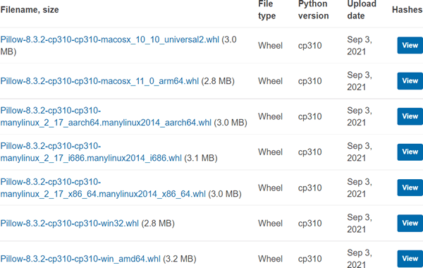
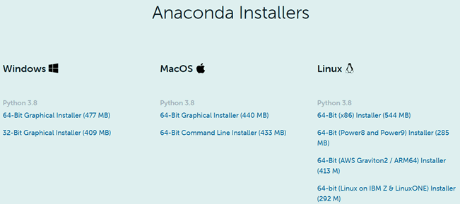
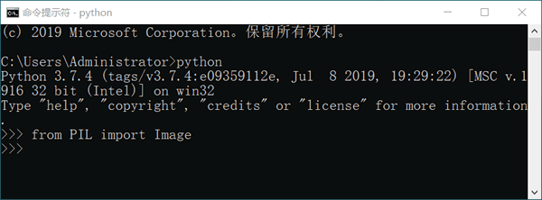

Pillow的下载与安装
Pillow 安装非常简单和方便，有三种安装途径，分别是：
下面对上述安装方式做简单介绍。
无论采用上述哪种方式都可以成功安装 Pillow。不过对于初学者来说，我们建议您使用第一种安装方式。
- pip包管理器安装
- 二进制包安装
- Anaconda安装
下面对上述安装方式做简单介绍。
注意，PIL 库与 Pillow 库不允许在同一环境中共存，如果您之前安装了 PIL 库，请卸载后，再安装 Pillow。
pip包管理器安装
通过 Python 包管理器 pip 来安装 Pillow 是最简单、轻量级的一种安装方式，并且这种方法适用于任何平台。只需执行以下命令即可：pip install pillow
二进制包安装
通过 Python PyPi 第三方库官网（https://pypi.org/project/Pillow/#files）下载与平台系统相对应的版本，如下所示：

图1：Pillow下载版本
下载完成后，进入下载文件的所在位置，然后直接使用图1：Pillow下载版本
pip命令来安装.whl文件即可，如下所示：
pip install + whl文件名
Anaconda安装
Anaconda 是一款开源的 Python 发行版（下载地址：https://www.anaconda.com/products/individual#Downloads），它是当下较为流行的科学计算平台，支持 Windows、Linux、MacOS 系统。Anaconda 自带许多已经安装完成软件包，其中就包含 Pillow，因此无须重新安装。

图2：Anaconda安装
图2：Anaconda安装
无论采用上述哪种方式都可以成功安装 Pillow。不过对于初学者来说，我们建议您使用第一种安装方式。
注意，本教程以 Windows 平台为例对 Pillow 库的相关知识进行讲解。
最后，在 CMD 命令行打开 Python 解释器交互环境，输入以下代码，验证 Pillow 是否安装成功。#导入Image类，该类是pillow中用于图像处理的重要类 from PIL import Image如下所示，如果解释器没有返回错误，则证明已经安装成功。

图3：测试Pillow安装成功
注意，这里使用 PIL 导入，但实际上使用的是 Pillow 库，这里的 PIL 可以看做是 Pillow 库的简称。
关注公众号「站长严长生」，在手机上阅读所有教程，随时随地都能学习。内含一款搜索神器，免费下载全网书籍和视频。

微信扫码关注公众号